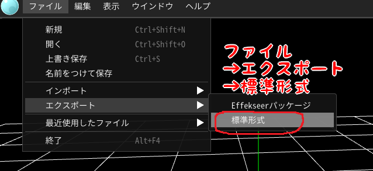
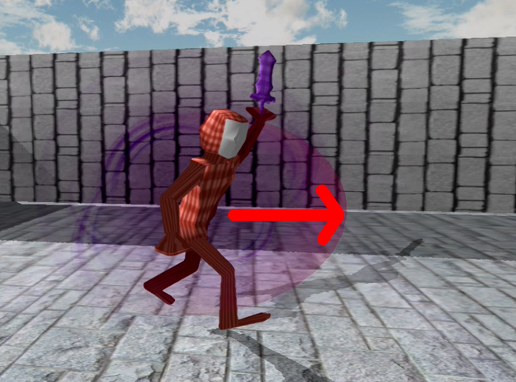

- Effekseer
- EffectEmitter
- flyweightパターン
6.1 Effekseer
6.2 エフェクト発生
- EffectEngineクラスのResistEffect関数でefkファイルを読み込んで、読み込んだデータを指定した番号に登録する。
- EffectEmitterクラスのオブジェクトを作成する。
- EffectEmitterクラスのInit関数で1.の番号を指定して、1.で読み込んだデータを持ってくる。
- EffectEmitterクラスのPlay関数でエフェクトが再生される。
- //Player.cpp
- #include "stdafx.h"
- #include "Player.h"
- #include "Game.h"
- #include "FireBall.h"
- #include "sound/SoundEngine.h"
- #include "sound/SoundSource"
- //CollisionObjectを使用するために、ファイルをインクルードする。
- #include "collision/CollisionObject.h"
- //EffectEmitterを使用するために、ファイルをインクルードする。
- #include "graphics/effect/EffectEmitter.h"
- .
- .
- .
- bool Player::Start()
- {
- .
- .
- .
- //「Sword」ボーンID(番号)を取得する。
- m_swordBoneId = m_modelRender.FindBoneID(L"Sword");
- //番号を指定して、efkファイルを読み込む。
- EffectEngine::GetInstance()->ResistEffect(1, u"Assets/effect/efk/enemy_slash_01.efk");
- return true;
- }
- //Player.cpp/Player::MakeSlashingEffect()/Player::OnAnimationEvent()
- void Player::MakeSlashingEffect()
- {
- //攻撃エフェクトを発生させる。
- EffectEmitter* effectEmitter = NewGO<EffectEmitter>(0);
- //ResistEffect関数で指定した番号を指定する。
- effectEmitter->Init(1);
- //大きさを設定する。
- effectEmitter->SetScale(Vector3::One * 11.0f);
- Vector3 effectPosition = m_position;
- //座標を少し上にする。
- effectPosition.y += 70.0f;
- //座標を設定する。
- effectEmitter->SetPosition(effectPosition);
- //エフェクトを再生する。
- effectEmitter->Play();
- SoundSource* se = NewGO<SoundSource>(0);
- se->Init(3);
- se->Play(false);
- se->SetVolume(0.8f);
- }
- .
- .
- .
- void Player::OnAnimationEvent(const wchar_t* clipName, const wchar_t* eventName)
- {
- //キーの名前が「attack_start」の時。
- if(wcscmp(eventName, L"attack_start"))
- {
- //攻撃中にする。
- m_isUnderAttack = true;
- //エフェクトを発生させる。
- MakeSlashingEffect();
- }
- //キーの名前が「attack_end」の時。
- else if(wcscmp(eventName, L"attack_end"))
- {
- //攻撃を終わる。
- m_isUnderAttack = false;
- }
- }
- //Player.cpp/Player::MakeSlashingEffect()
- void Player::MakeSlashingEffect()
- {
- //攻撃エフェクトを発生させる。
- EffectEmitter* effectEmitter = NewGO<EffectEmitter>(0);
- //ResistEffect関数で指定した番号を指定する。
- effectEmitter->Init(1);
- //大きさを設定する。
- effectEmitter->SetScale(Vector3::One * 11.0f);
- Vector3 effectPosition = m_position;
- //座標を少し上にする。
- effectPosition.y += 70.0f;
- //座標を設定する。
- effectEmitter->SetPosition(effectPosition);
- Quaternion rotation;
- //プレイヤーの回転。
- rotation = m_rotation;
- //回転させる。
- rotation.AddRotationDegY(360.0f);
- rotation.AddRotationDegZ(180.0f);
- //回転を設定する。
- effectEmitter->SetRotation(rotation);
- //エフェクトを再生する。
- effectEmitter->Play();
- SoundSource* se = NewGO<SoundSource>(0);
- se->Init(3);
- se->Play(false);
- se->SetVolume(0.8f);
- }
6.3 まとめ
- エフェクト制作には、Effekseerを使用する。
- エフェクトの発生には、EffectEmitterクラスを使用する。
6.4 Tips flyweightパターン
- void EffectEngine::ResistEffect(const int number, const char16_t* filePath)
- {
- Effekseer::EffectRef effect;
- auto it = m_effectMap.find(number);
- //ロードされていなければ。
- if (it == m_effectMap.end()) {
- //新規にファイルを読み込む。
- effect = Effekseer::Effect::Create(m_manager, filePath);
- m_effectMap.insert({ number, effect });
- }
- }
この章で学ぶこと
最後に、通常攻撃に「エフェクト」を追加しましょう。「エフェクト」とは、以下のようなものです。


tools/Effekseer160Win/ToolのEffekseer.exeでEffekseerが起動します。
k2Engine用のエフェクトを出力する時は、エクスポート→標準出力を選んでください。

エフェクトを使用するとゲームが映えるので、積極的に活用していきましょう。
以下は、2021年生の作品です。
善永先生の作品です。
それでは、通常攻撃時にエフェクトが発生するようにしましょう。今回は予めエフェクトを用意しているので、それを利用します。
エフェクトもサウンドと同じように以下の手順で発生させます。
それでは、Player.cppに下記のコードを追加してください。
enemy_slash_01.efkというのが今回使用しているエフェクトです。これで、efkファイルを読み込むことに成功しました。
続いて、読み込んだefkファイルを元にエフェクトを発生させます。Player.cppに下記のコードを追加してください。
続いて、読み込んだefkファイルを元にエフェクトを発生させます。Player.cppに下記のコードを追加してください。
できたら実行してみましょう。攻撃時にエフェクトが発生しているでしょうか。
しかし、エフェクトの向きがプレイヤーの向きとあっていませんね？
EffectEmitterにも、ModelRenderと同じように、座標・回転・大きさを設定することができます。エフェクトが攻撃する方向を向くように、調整してみましょう。
では、Player.cppのMakeSlashingEffect関数を次のように修正してください。
EffectEmitterにも、ModelRenderと同じように、座標・回転・大きさを設定することができます。エフェクトが攻撃する方向を向くように、調整してみましょう。
では、Player.cppのMakeSlashingEffect関数を次のように修正してください。
できたら実行してみましょう。エフェクトが攻撃方向に向いているでしょうか。

これで通常攻撃の実装は終わりです。
.wavファイルや.efkファイルの読み込みに関して、flyweightパターンというものを活用しています。flyweightパターンというのは、デザインパターンと呼ばれるものの一種です。
デザインパターンとは
デザインパターンとは
flyweightパターンというのは、インスタンスを共有して活用することにより無駄なインスタンスの生成を省き、処理の高速化やメモリの使用量を減らすことを目的としたものです。
k2Engineでは、同じ.wavファイルや.efkファイルを読み込む際に、一度ファイルを読み込んだことがあれば、その読み込んだインスタンスを使いまわしています。 これにより、ファイルを読み込む過程を省いたり、インスタンス使いまわしによるメモリ使用量の削減が見込めます。
k2Engineでは、同じ.wavファイルや.efkファイルを読み込む際に、一度ファイルを読み込んだことがあれば、その読み込んだインスタンスを使いまわしています。 これにより、ファイルを読み込む過程を省いたり、インスタンス使いまわしによるメモリ使用量の削減が見込めます。
ゲームでは様々な処理を行わないといけないので、処理の高速化やメモリ使用量の削減は重要な課題の1つなのです。